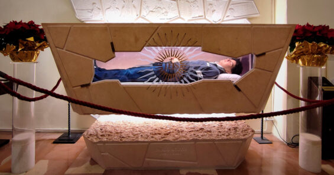
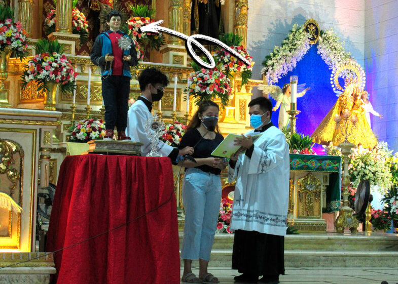
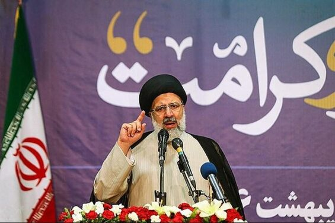
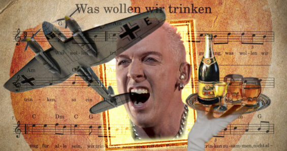

КОРОТКІ ІСТОРІЇ
У ТРАВНІ 2024 РОКУ ПАПА РИМСЬКИЙ ФРАНЦИСК ВИЗНАВ ЧУДО, ЯКЕ ПРИПИСУЮТЬ БЛАЖЕННОМУ КАРЛО АКУТІСУ, ТА ОГОЛОСИВ, ЩО СКЛИЧЕ КОНСИСТОРІЮ КАРДИНАЛІВ СПЕЦІАЛЬНО ЗАДЛЯ ОБГОВОРЕННЯ КАНОНІЗАЦІЇ ПІДЛІТКА. ОТЖЕ, КАРЛО АКУТІС, ЯКИЙ ПОМЕР ВІД ЛЕЙКЕМІЇ У 2006 РОЦІ, МОЖЕ СТАТИ ПЕРШИМ СВЯТИМ КАТОЛИЦЬКОЇ ЦЕРКВИ У ТРЕТЬОМУ ТИСЯЧОЛІТТІ. Валерія Вальверде, студентка, що навчалася у Флоренції, впала з велосипеда і отримала черепно-мозкову травму, знаходилася в критичному стані. Їй зробили трепанацію зводу черепа, аби знизити внутрішньочерепний тиск. Але, за словами лікарів, шанси вижити були дуже низькими. Мати Валерії вирушила на прощу. Вона вирішила звернутися з молитвою про спасіння доньки до Карла Акутіса біля його гробу у селищі Ассізі в Італії. І дівчина стала одужувати, а проведене згодом дослідження показало, що забій її мозку зник. За два місці після нещасного випадку Валерія сама відправилася з подякою до гробу Карло. Це вже друге чудо, яке приписують заступництву Карла. Раніше семирічний хлопчик із Бразилії на ім’я Матеус одужав від рідкісної вади, що зветься кільцеподібною підшлунковою, після контакту з однією з футболок Акутіса і завдяки молитвам матері. Визнання церквою цих двох див є підставою для канонізації Карло Акутіса, якщо так вирішать кардинали. Карло Акутіс народився у 1991 році в Лондоні, куди його батьки-італійці Андреа та Антонія приїхали в пошуках роботи. Через деякий час сім’я повернулася до Мілана. Поступово хлопчик захопився інформатикою. Ще на початку «ери інтернету» він створив перший у світі онлайн-каталог Євхаристійних чудес, збираючи про них докладну інформацію. Карло також створював сайти для церков та проповідував для молоді у Фейсбук. «Всі ми приходимо у цей світ самобутніми; не станьте блідими ксерокопіями!» – зокрема писав він. Ще одна його цитата: «Пресвята Євхаристія – це моя автострада до неба».
Отже, Карло стали називати «інфлюенсером Бога», а ще «кіберапостолом». На жаль, мандрівка «автострадою до неба» була для Карла швидкоплинною. У 15 років він дізнався про свій діагноз – лейкемію. А за два місяці юнак помер. Після цього серед його численних прихильників у всьому світі багато хто став вважати Карла святим покровителем інтернету (офіційно покровителем інтернету Ватиканом визнаний святий Ісидор Севільський, який був енциклопедистом у VI-VII ст.). Карло став також головним героєм VR-гри під назвою «Acutis Game», яка дає можливість здійснити прогулянку католицькою історією. Матері Карла Антонії лікарі встановили діагноз, який унеможливлює мати ще дітей. Але за чотири роки після смерті старшого сина жінка народила близнюків. Антонія вважає, що так сталося через заступництво Карла. Всі ці непересічні події зумовили те, що Карло – головний претендент на те, щоб стати першим святим міленіалом в історії.
Хто він, президент Ірану, який загинув після падіння гелікоптера? Ібрагім Раїсі народився 14 грудня 1960 року в сім’ї священнослужителя. У студентстві брав активну участь в Ісламській революції 1978-1979 років. Є свідоцтва (хоча і не доведені), що він був одним з тих, хто відразу після революції захоплював посольство США в Тегерані. Він активно впроваджував повернення Ірану до законів шаріату, і, як “зразковий і побожний мусульманин”, у 1981 році був призначений прокурором міста Карадж. Особисто брав участь у процесах над неугодними і “контрреволюціонерами”. У 1988 році зблизився із самим аятолою Рухоллою Хомейні, Верховним лідером Ісламської Республіки Іран. Раїсі виконував спеціальні позасудові завдання для аятоли. Поступово Раїсі добрався до керівництва судовою системою Ірану. Він без успіху балотувався на пост президента в 2017 році проти Хасана Рухані, відносно поміркованого священнослужителя, який як згодом досяг ядерної угоди Тегерана зі світовими державами в 2015 році. У 2021 році Раїсі знову взяв участь у виборах, на яких усім його потенційним опонентам було заборонено балотуватися спеціальною радою, яка на свій розсуд дозволяє кандидатам балотуватися. Незважаючи на ці заборони, Раїсі ледве виграв. На першій же прес-конференції після виборів він змушений був відповідати про свою участь у звірствах 1988 року, тих самих “особливих дорученнях” аятоли. Це були розстріли іранських політичних в’язнів, що тривали п’ять місяців. Ув’язнених піддавали тортурам, а потім страчували. Заступник Рухолли Хомейні Хуссейн-Алі Монтазері вказував у своїх мемуарах число від 2800 до 3800, а Amnesty International – до 30 000 жертв. Ще у 2019 році Міністерство фінансів США наклало на Раїсі санкції «за його адміністративний нагляд за стратами неповнолітніх осіб, а також за катування та інше жорстоке, нелюдське поводження з ув’язненими в Ірані, включаючи ампутації». Наразі країною фактично керує Верховний лідер Ірану Алі Хаменеї. Але Раїсі як президент є його однодумцем. Він, зокрема, підтримував організацію в Ірані збагачення урану для створення ядерної зброї і перешкоджав міжнародним інспекторам це перевіряти. У вересні 2022 року у Тегерані стався жахливий випадок. Жінка на ім’я Магса Аміні була заарештована і піддана катуванням спеціальним поліцейським підрозділом – поліцією моралі Ірану – за те, що вона не носила хіджаб належним чином. Через катування вона впала в кому і померла. Після її смерті спалахнули протести, які були жорстко придушені за підтримки Раїсі. Протягом місячного протистояння загинуло понад 500 людей і понад 22 000 були заарештовані. Раїсі також підтримав масштабну атаку Ірану на Ізраїль у квітні 2024 року, коли по країні було випущено понад 300 безпілотників і ракет у відповідь на атаку на посольство Ірану в Сирії. В цій атаці Іран звинуватив Ізраїль. А 19 травня 2024 року вертоліт з Раїсі здійснив “жорстку посадку” в лісах Арасбаран у північно-західній провінції Східний Азербайджан. На ранок стало відомо, що Раїсі та голова МЗС країни Хосейн Амір-Абдоллахян загинули внаслідок цієї авіатрощі.
У 1929-му двоє юних мешканців французької Бретані, Жан-Бернар та Жан-Марі Пріма, збирали яблука на сидр. І в процесі написали «Пісню про сидр», вона ж «Пий сидр, Лау!» (Son Ar Chistr / Ev chistr ‘ta Laou!) бретонською мовою (кельтська мова, поширена у регіоні Бретань). Текст – простенький, про любов до напою та дівчат, а також ревнощі з боку дружини. Напевно брати не здогадувалися, що з часом їхній твір називатимуть старовинною народною піснею, а ще навигадують про неї такого… Насамперед – що нібито німецька версія пісні під назвою Was Wollen Wir Trinken («Що ми будемо пити») була «гімном» військово-повітряних сил Третього Райху (Люфтваффе). Це повна маячня. До речі, гімнів родів військ не існує в принципі, а «Люфтваффе СС» (саме так часто стверджують у підписах до треку) – така ж нісенітниця, як «ОСББ ФСБ». Що характерно, вигадка про використання пісні у нацистській Німеччині поширена тільки у країнах колишнього СРСР. Як саме вона виникла і як завірусилася, незрозуміло. Ймовірно, зіграло свою роль те, що німецька мова в багатьох автоматично асоціюється з нацизмом.